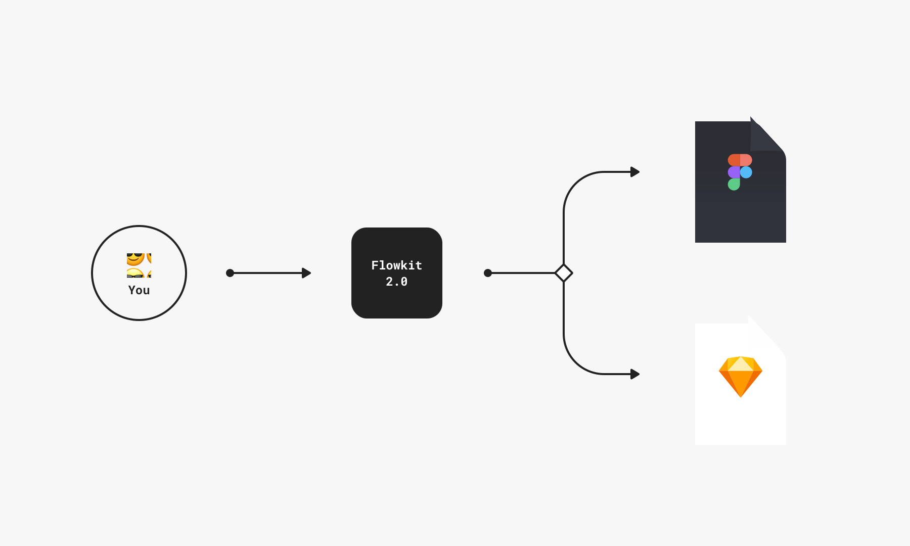
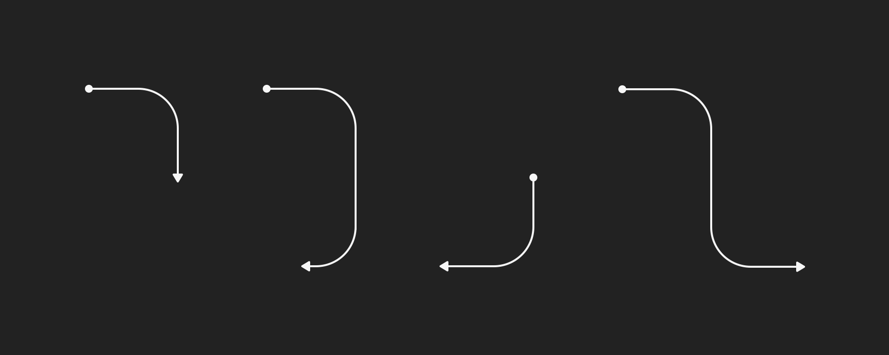

What's New
Version 3.0
Flowkit has been completely redesigned and fine-tuned for the third time for Figma, Sketch, and Adobe XD. It's also now available as a handy dandy Figma plugin.
- Released on 19 November, 2019
- Completely new look and feel
- Designed on a
90/180grid - Brand-new native Figma plugin for placing components
- Completely abstracted component system for easy customization
- Updated with
Sketch version 60and later - Updated with
Figma build 7and later - Updated with
Adobe XD version 24.0.22.19and later
Version 2.0.3 – Bug Fixes
- Updated on 10 June, 2019
- Updated Sketch version with Sketch 55.1
- Fixed blue green dash/fill problem
- Fixed split dividers to be equal size when scaling, instead of one side scaling.
- Fixed a random typo that I can't remember, but had a note about doing so, so I'm pretty sure it happened.
- Changed default font to Verdana so both Windows and Mac users can enjoy Flowkit without getting font-missing errors if they don't have SF Pro or Roboto Mono, or anything better than Verdana. It's for the best, trust me.
- Extended the download period to 6 months instead of 1 month, because this is the number one thing I get support emails about.
- Fixed a reflection issue when you override a tap origin "A" with a directional swipe or any other interaction override.
Version 2.0.2 – Bug Fix
This version fixes a rotational issue when overriding the standard point of origin, which uses the end cap component, Cap / Dot / Solid, with an arrow. Now you can override the default starting points with backwards facing arrows.
Version 2.0
Flowkit has been redesigned from the ground up for both Figma and Sketch. Both files contain the same content in regards to symbols and components, but each format was designed natively to leverage the unique features of each tool.
Please note, the use of the word component below applies to both Figma components and Sketch symbols respectively.
New Grid
Each component has been redesigned at 360x360 pixels with padding included. This means that all flows, blocks, annotations, etc. can now be aligned side by side, with zero margin, and have a consistent spacing throughout the entire document. This eliminates the need to guess the dimensions and proper spacing for any specific component used in your flow.
Master Components
The Master Components are the foundational pieces that create all of the component instances. The total number of Master components for the flow lines has been reduced from 22 components in Flowkit 1.0 to now only 12 Master components in Flowkit 2.0.
Each variation of the Master components all scale correctly while manually scaling the bounding box of a component or by using keyboard shortcuts like ⌘ (↑ → ↓ ←) and ⌘ ⇧ (↑ → ↓ ←). Any edits made to these components will affect all instances in the library. It is not recommended to modify the Master Components.
Master Variants
There are several master variants for quickly changing the core style of the Flow instance. These include Dashed, Red, Green, Blue, and Light.
Native Styles
Pre-built styles are available for all components in Flowkit. There are multiple options for stroke styles, fill colors, and more built right into both Figma and Sketch using their respective techniques.
Naming Conventions
Each directional component uses the following naming convention. It begins with the point of origin and ends with the destination.
Type / Direction 1 / Modifier 1 / Direction 2 / Modifier 2
- Type can be either
FloworTap, depending on the type of flow you are creating.Flowis intended to be used for high-level user flows, whereasTapis intended to be used with wireframes or actual screen designs all on the same artboard. - Direction 1 determines the initial direction of the path. This can be
Right,Left,Up, orDown - Modifier 1 comes immediately after the Primary Direction. This can be
Straight,Curve, orSnake. - Direction 2 comes immediately after the Initial Modifier.
RightandLeftcomponents can be eitherUp, orDown, whereasUpandDowncomponents will have Secondary Modifiers asLeft, orRight. - Modifier 2 is the final section of the Flow component and determines the direction of the arrow. This can be
Straight,U-turn, orHook.
Flows
These are the primary components in the system. There are 11 options (listed below) for each direction. All Flow components can be scaled without skewing or stretching. Each Flow component also contains nested endpoints that can be hidden or overridden with different end points.
There are 11 variants in total for each direction. For example:
Flow / Right / StraightFlow / Right / Curve / Down / StraightFlow / Right / Curve / Down / U-turnFlow / Right / Curve / Down / HookFlow / Right / Curve / Up / StraightFlow / Right / Curve / Up / U-turnFlow / Right / Curve / Up / HookFlow / Right / Snake / Down / StraightFlow / Right / Snake / Down / HookFlow / Right / Snake / Up / StraightFlow / Right / Snake / Up / Hook
Taps
Taps are intended for use on top of UI screen designs when laying out flow documents. They follow the same naming pattern as Flow components. Each endpoint has been pre-overridden with the Tap endpoint and can additionally be changed to other interactions, such as Swipe, Long Press, and Double Tap.
End Points
In Flowkit 2.0 every single End Point is the same dimension and can be interchanged with any other end point instance for full customization. These include circles, arrows, taps, swipes, and more.
Splits
There are 4 directional Split components for indicating a fork in a user flow. These are created with nested Flow components, but can also be extended or modified for more complex flows.
Blocks
Blocks are used as main sections of user flows. Just like every other component, they're built on a 360x360 grid. There are multiple Block options such as Default, Dashed , Emphasis, and Solid.
There are also Device blocks for iOS,Android, and Browser.

Labels
There are multiple label styles including solid and outline versions of default, red, blue, and green. Labels are intended for use with Flow or Tap lines to provide more context about a specific user path.
Annotations
There are two types of annotation components. The general Annotation Labels can be used anywhere within your flow to provide more situational context, whereas the Annotation Points are intended to callout specific areas of your screen designs.
Dark Mode
Flowkit 2.0 comes with an inverted color option for dark interfaces, dark backgrounds and those who generally like to live life on the dark side. 😎
Version 1.0
The first version of Flowkit was Sketch-only. It was made public on November 16, 2017. I wasn't planning on making a full website for it so there isn't a lot of documentation.
However, the file did contain installation and usage instructions baked into it. You can view a preview of the original document in Sketch Cloud.